1. 数据分析思维与业务流程
1.1 数据分析概述
1.1.1 预测未来 - 数据分析在总统大选中的预测作用
传统抽样，随机抽人，但是可能抽样的人群大部分是某个特定群体的，导致结果不准，而定额抽样法可以避免，样本更分散
但是 1948 年的总统预测却错了，当时预测杜威会打败杜鲁门获胜，实际上却是杜鲁门获胜。因为杜威是共和党人，共和党人的选民大部分是高知和富裕的人，而调查人员又偏好去富裕、环境好的地方采样，所以导致预测失败。
于是，定额抽样法再次优化为分层多阶抽样
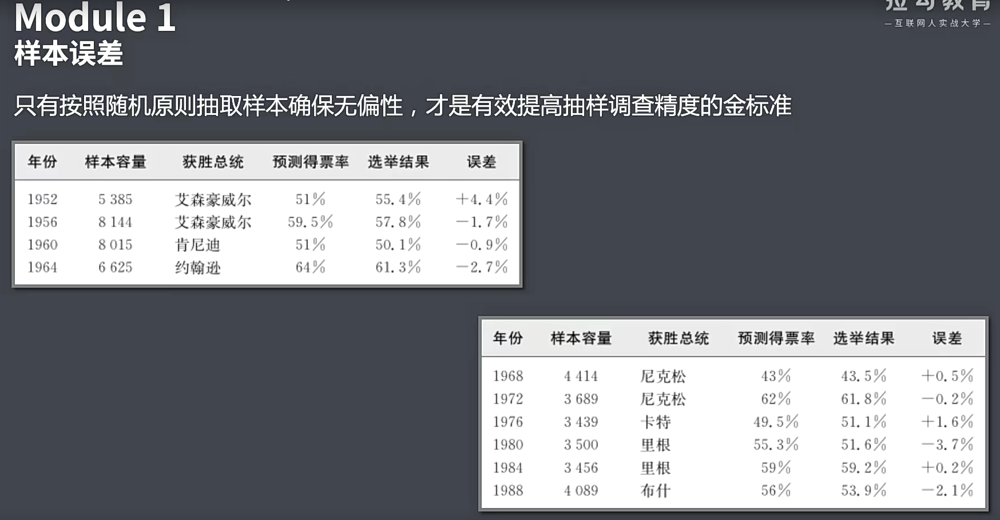
1.1.2-1.1.3 优化现状-数据分析对化妆品销售的优化作用…

加载数据
数据处理：将矩阵转置，要让列是不同的影响因素，行是不同月份。这样比较好处理
corr：获得特征和特征之间的线性关系(y=kx+b，y 和 x 之间的关系)，一般值是-1~1，0 为不相关，1 为正相关(x↑y↑)，-1 为负相关(x↑y↓)
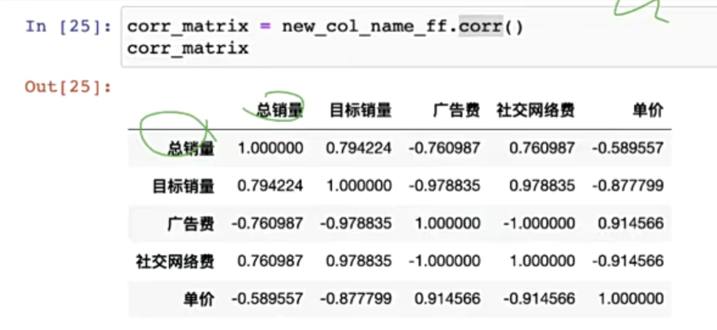
我们只关心总销量和其他影响因素的关系
公司报表喜欢将结论放前面
1.1.4-1.1.5 总结规律-数据分析师在招聘市场上的需求分.…

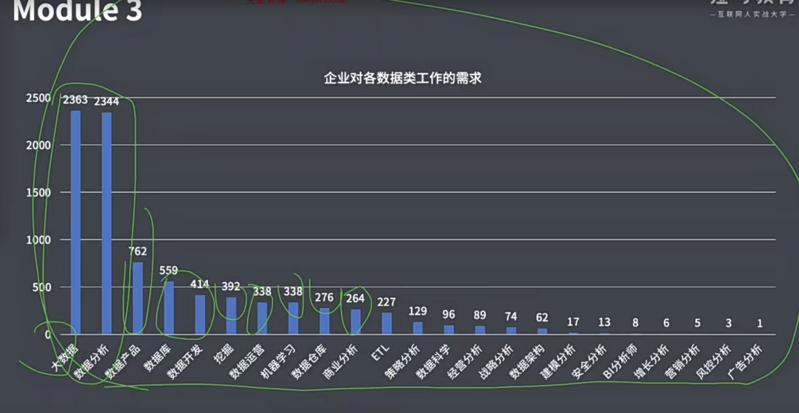
从后端平台下载数据，存到 excel，通过 python 读入

使用工具进行汇总…

柱状图是 excel 生成的，通过 sql 导出 excel
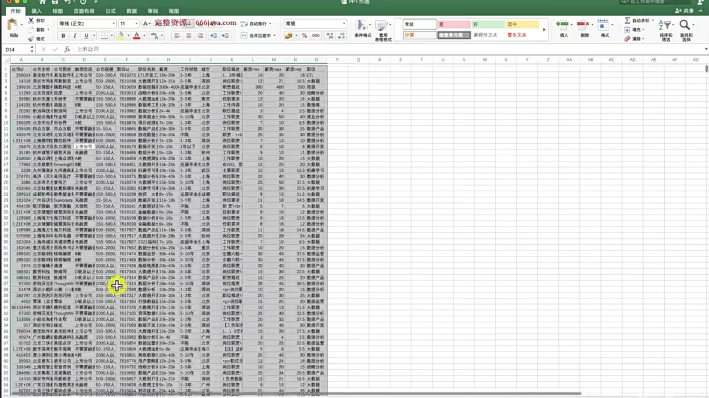
1.1.6 数据分析师职业规划&课程体系

1.2 实战-某线下连锁水果店销售数
1.2.1 水果店营收背景
1.2.2 问题确认与指标拆解
1.2.3 水果店利润问题解决流程
1.2.4 利用分组分析找到亏损店铺做营销优化
实操主要关注指定方案、目标评估、实验、分析实验效果等步骤，其中目标评估需要和领域专家合作
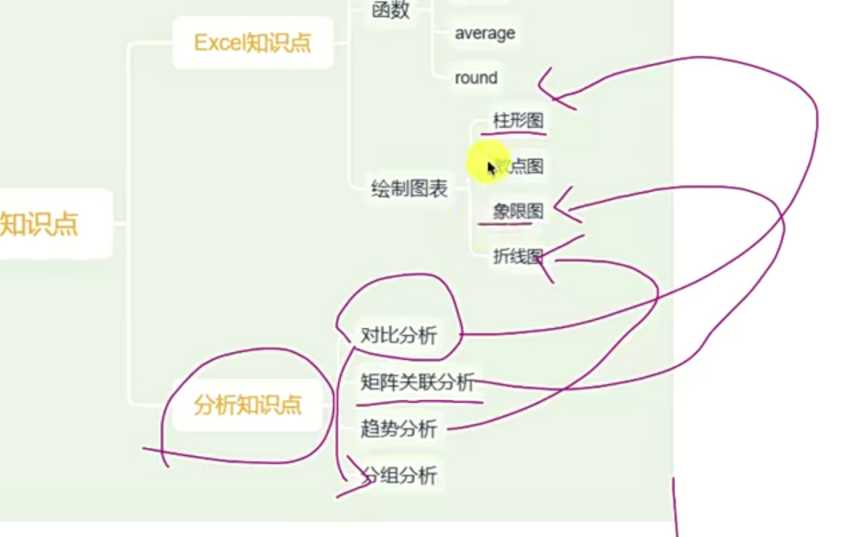
操作
1.2.5 分组分析实验验证与结论

计算毛利额：方案前日均毛利*(1 + 增幅)^3
数据可视化
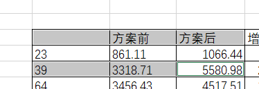
1.2.6 运用对比分析、矩阵关联、超势分析解决水果…
2. MYSQL 数据分析实战
3. 互联网公司必备-BI 商业智能工具
3.1 Tableau 数据可视化
3.1.1 引言 BI 可视化明星——Tableau
01–问题先行

演示
为什么学 Tableau
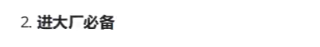
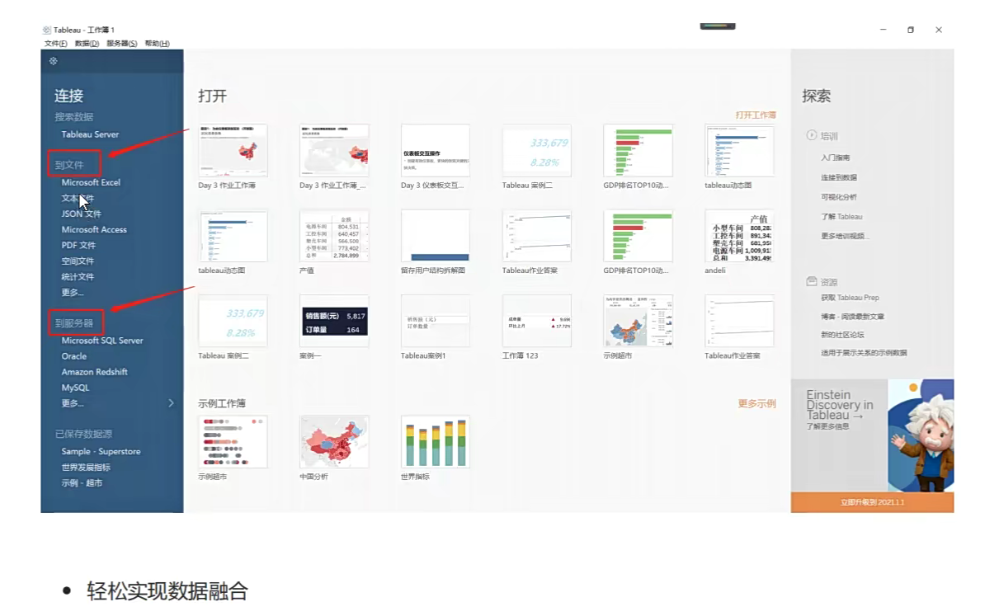
Tableau 可视化成果展示
- 其他 BI（fineBI、quickBI 等国产 BI）都是碰瓷 Tableau 和 PowerBi 的，不建议专门学
02–课程亮点&学完收获
03–课程大纲

3.1.2 任务一 出发去探索 Tableau 吧
01–Tableau 家族产品初探索

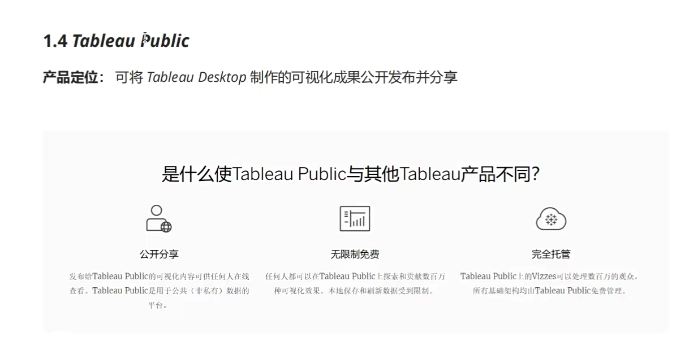
02–Tableau Desktop 工作区
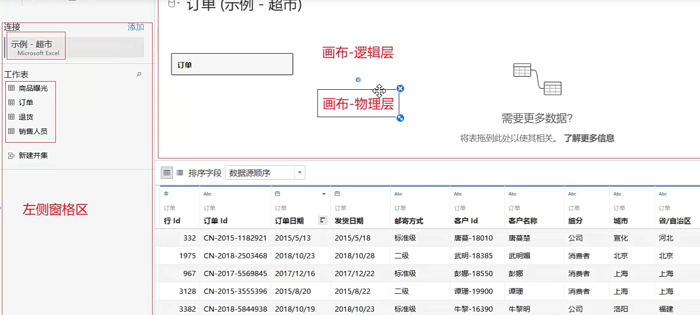
工作表
我 2021 版的破解需要在仪表盘打开工作表才能看到图
仪表板
故事

03–Tableau Desktop 文件管理
3.1 Tableau 工作簿 / 打包工作簿（.twb / .twbx）

3.2 Tableau 数据源（.tds / .tdsx）

3.3 Tableau 数据提取（.hyper）
总结
3.1.3 任务二 连接数据，基础且必须
01–认识 Tableau 数据–数据角色
度量和维度
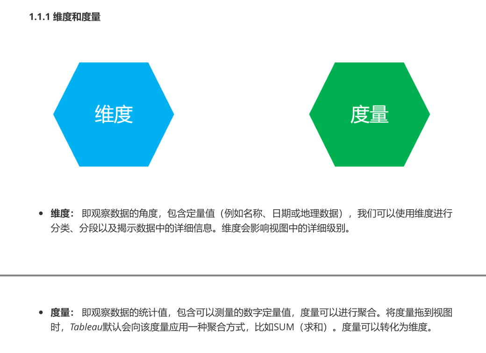
离散和连续
蓝色字段和绿色字段
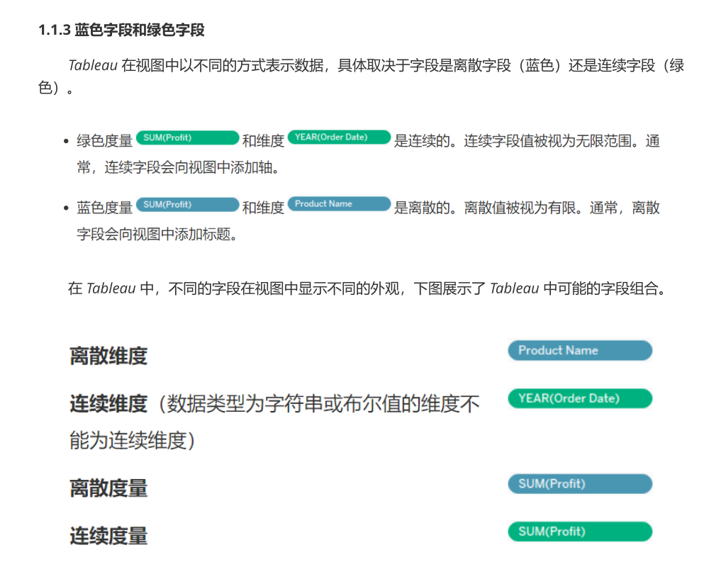
02–认识 Tableau 数据–字段类型
1.2.1 Tableau 中的数据类型图标
03–认识 Tableau 数据–字段类型转换
在 Tableau 中，我们可以在“数据源”页面或工作表“数据”窗格页面中更改字段的数据类型。
数据源页
工作表“数据”窗格
04–认识 Tableau 数据–字段简单处理
1.4.1 数据解释器

1.4.2 列拆分
- 数据源页

- 工作表“数据”窗格
1.4.3 转置
1.4.4 隐藏

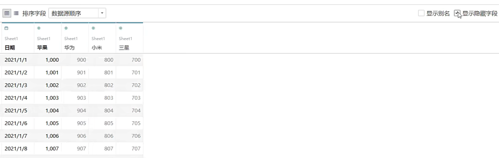
1.4.5 重命名
05–支持导入的数据类型丰富多样
2.1 本地文件数据
- 2.1.1 Excel 文件

- 2.1.2 文本文件（ csv / txt ）
2.2 服务器数据

06–轻松实现数据融合–数据连接
3.1 数据连接
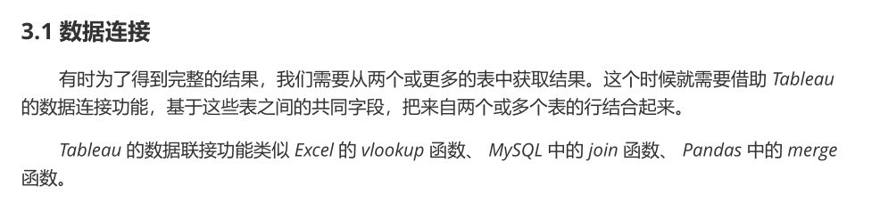
3.1.1 连接方式
3.1.2
英雄榜
07–轻松实现数据融合–数据合并[3]
3.2.1 数据合并方式
- 手动合并
- 通配符搜索
08–轻松实现数据融合–数据混合关系
4. 大数据查询利器 Hive
5. 数据分析必学编程语言-Python
6. 数据分析必备理论基础-统计学知识
1 统计学基本原理：描述统计、总体推断
任务一：描述统计
统计学的本质和目的

统计学基本概念：变量测量尺度
定距的数据，比如温度，为 0 是有意义的(没有绝对 0 点)，而定比的数据，为 0 是没意义的；定比的数据可以乘除
统计学基本概念：平均值
统计学基本概念：中位数和众数
均值和中值、众数衡量集中趋势，可以描述一个群体的共性
统计学基本概念：极差和标准差
离散趋势(应用更多，代表了数据包含的信息量)
任务二：总体推断
7. 数据分析项目实战-指标体系与 ABTest
8. 数据挖掘算法与实战
第八阶段模块一
1–任务一： KNN 算法
01–前言：机器学习理论基础

1.1 常用机器学习算法体系
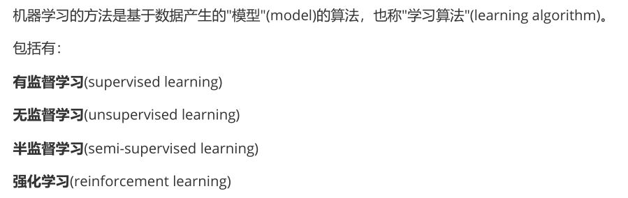
- 1.1.1 有监督学习
- 1.1.2 无监督学习
- 1.1.3 半监督学习
- 1.1.4 强化学习
- 1.1.5 输入/输出空间、特征空间
- 1.1.6 过拟合与欠拟合
02–算法原理与实现步骤
03–算法优缺点及算法变种
04–python 实现
导入相关包
#全部行都能输出 from IPython.core.interactiveshell import InteractiveShell InteractiveShell.ast_node_interactivity = "all" import numpy as np import pandas as pd import matplotlib.pyplot as plt # 解决坐标轴刻度负号乱码 plt.rcParams['axes.unicode_minus'] = False # 解决中文乱码问题 plt.rcParams['font.sans-serif'] = ['Simhei'] plt.style.use('ggplot') # plt.figure(figsize=(2,3),dpi=720)构建已经分类好的原始数据集
首先随机设置十个样本点表示十杯酒，这里取了部分样本。为了方便验证，这里使用 Python 的字典 dict 构建数据集，然后再将其转化成 DataFrame 格式。
rowdata = {'颜色深度': [14.13,13.2,13.16,14.27,13.24,12.07,12.43,11.79,12.37,12.04], '酒精浓度': [5.64,4.28,5.68,4.80,4.22,2.76,3.94,3.1,2.12,2.6], '品种': [0,0,0,0,0,1,1,1,1,1]} # 0 代表 “黑皮诺”，1 代表 “赤霞珠” wine_data = pd.DataFrame(rowdata) wine_dataX = np.array(wine_data.iloc[:, 0:2]) # 我们把特征（酒的属性）放在X y = np.array(wine_data.iloc[:, -1]) # 把标签（酒的类别）放在Y # 探索数据，假如我们给出新数据[12.03,4.1] ，你能猜出这杯红酒是什么类别么? new_data = np.array([12.03, 4.1]) plt.scatter(X[y == 1, 0], X[y == 1, 1], color='red', label='赤霞珠') # 画出标签y为1的、关于“赤霞珠”的散点 plt.scatter(X[y == 0, 0], X[y == 0, 1], color='purple', label='黑皮诺') # 画出标签y为0的、关于“黑皮诺”的散点 plt.scatter(new_data[0], new_data[1], color='yellow') # 新数据点 print(new_data) plt.xlabel('酒精浓度') plt.ylabel('颜色深度') plt.legend(loc='lower right') plt.savefig('葡萄酒样本.png')计算已知类别数据集中的点与当前点之间的距离
我们使用欧式距离公式，计算新数据点 new_data 与现存的 X 数据集每一个点的距离:
from math import sqrt distance = [sqrt(np.sum((x-new_data)**2)) for x in X ] distance将距离升序排列，然后选取距离最小的 k 个点
sort_dist = np.argsort(distance) sort_distarray([6, 7, 1, 4, 5, 9, 2, 8, 3, 0], dtype=int64)
6、7、4 为最近的 3 个“数据点”的索引值，那么这些索引值对应的原数据的标签是什么？
k = 3 topK = [y[i] for i in sort_dist[:k]] topK # [1,1,0]确定前 k 个点所在类别的计数
pd.Series(topK).value_counts().index[0] # 1将上述过程封装成一个函数
def KNN(new_data,dataSet,k): ''' 函数功能：KNN分类器 参数说明： new_data: 需要预测分类的数据集 dataSet: 已知分类标签的数据集 k: k-近邻算法参数，选择距离最小的k个点 return: result: 分类结果 ''' from math import sqrt from collections import Counter import numpy as np import pandas as pd result = [] distance = [sqrt(np.sum((x-new_data)**2)) for x in np.array(dataSet.iloc[:,0:2])] sort_dist = np.argsort(distance) topK = [dataSet.iloc[:,-1][i] for i in sort_dist[:k]] result.append(pd.Series(topK).value_counts().index[0]) return result# 测试函数的运行结果 new_data=np.array([12.03,4.1]) k = 3 KNN(new_data,wine_data,k) # [1]
05–python 实现总结及可视化
# 全部行都能输出
from IPython.core.interactiveshell import InteractiveShell
InteractiveShell.ast_node_interactivity = "all"
import pandas as pd
import matplotlib.pyplot as plt
import numpy as np
# 解决坐标轴刻度负号乱码
plt.rcParams['axes.unicode_minus'] = False
# 解决中文乱码问题
plt.rcParams['font.sans-serif'] = ['Simhei']
plt.style.use('ggplot')
# plt.figure(figsize=(2,3),dpi=720)
rowdata = {'颜色深度': [14.13, 13.2, 13.16, 14.27, 13.24, 12.07, 12.43, 11.79, 12.37, 12.04],
'酒精浓度': [5.64, 4.28, 5.68, 4.80, 4.22, 2.76, 3.94, 3.1, 2.12, 2.6],
'品种': [0, 0, 0, 0, 0, 1, 1, 1, 1, 1]}
# 0 代表 “黑皮诺”，1 代表 “赤霞珠”
wine_data = pd.DataFrame(rowdata)
print(wine_data)
X = np.array(wine_data.iloc[:, 0:2]) # 我们把特征（酒的属性）放在X
y = np.array(wine_data.iloc[:, -1]) # 把标签（酒的类别）放在Y
# 探索数据，假如我们给出新数据[12.03,4.1] ，你能猜出这杯红酒是什么类别么?
new_data = np.array([12.03, 4.1])
plt.scatter(X[y == 1, 0], X[y == 1, 1], color='red', label='赤霞珠') # 画出标签y为1的、关于“赤霞珠”的散点
plt.scatter(X[y == 0, 0], X[y == 0, 1], color='purple', label='黑皮诺') # 画出标签y为0的、关于“黑皮诺”的散点
plt.scatter(new_data[0], new_data[1], color='yellow') # 新数据点
print(new_data)
plt.xlabel('酒精浓度')
plt.ylabel('颜色深度')
plt.legend(loc='lower right')
plt.savefig('葡萄酒样本.png')
plt.show()
from math import sqrt
distance = [sqrt(np.sum((x - new_data) ** 2)) for x in X]
print(distance)
# 从近到远排序后的原数据点
sort_dist = np.argsort(distance)
print('sort_dist:\n', sort_dist)
k = 3
# 找出离新数据最近的3个点
topK = [y[i] for i in sort_dist[:k]]
print(topK) # [1,1,0]
# Pandas Series 类似表格中的一个列（column），类似于一维数组，可以保存任何数据类型
# 找出其中数量最多的值
print(pd.Series(topK).value_counts().index[0]) # 1
def KNN(new_data, dataSet, k):
'''
函数功能：KNN分类器
参数说明：
new_data: 需要预测分类的数据集
dataSet: 已知分类标签的数据集
k: k-近邻算法参数，选择距离最小的k个点
return:
result: 分类结果
'''
from math import sqrt
from collections import Counter
import numpy as np
import pandas as pd
result = []
distance = [sqrt(np.sum((x - new_data) ** 2)) for x in
np.array(dataSet.iloc[:, 0:len(dataSet.columns) - 2])]
sort_dist = np.argsort(distance)
topK = [dataSet.iloc[:, -1][i] for i in sort_dist[:k]]
result.append(pd.Series(topK).value_counts().index[0])
return result
# 测试函数的运行结果
new_data = np.array([12.03, 4.1])
k = 3
print(KNN(new_data, wine_data, k)) # [1]
06–使用 sklearn 实现
案例一：红酒
from sklearn.neighbors import KNeighborsClassifier # 0 代表 “黑皮诺”，1 代表 “赤霞珠” clf = KNeighborsClassifier(n_neighbors = 3) clf = clf.fit(wine_data.iloc[:,0:2], wine_data.iloc[:,-1]) result = clf.predict([[12.8,4.1]]) # 返回预测的标签 result # array([0])# 对模型进行一个评估，接口score返回预测的准确率 score = clf.score([[12.8,4.1]],[0]) score # 1.0clf.predict_proba([[12.8,4.1]]) # array([[0.66666667, 0.33333333]]) #输出数据[12.8,4.1]为标签0的概率（0.666...），以及标签为1的概率（0.333...）.py
from sklearn.neighbors import KNeighborsClassifier import pandas as pd import numpy as np rowdata = {'颜色深度': [14.13, 13.2, 13.16, 14.27, 13.24, 12.07, 12.43, 11.79, 12.37, 12.04], '酒精浓度': [5.64, 4.28, 5.68, 4.80, 4.22, 2.76, 3.94, 3.1, 2.12, 2.6], '品种': [0, 0, 0, 0, 0, 1, 1, 1, 1, 1]} # 0 代表 “黑皮诺”，1 代表 “赤霞珠” wine_data = pd.DataFrame(rowdata) clf = KNeighborsClassifier(n_neighbors=3) # n_neighbors默认5 # 拟合（训练） clf = clf.fit(wine_data.iloc[:, 0:2], wine_data.iloc[:, -1]) # 预测 res = clf.predict([[12.8, 4.1]]) print(res) # [0] # 对模型进行一个评估，接口score返回预测的准确率 score = clf.score([[12.8, 4.1]], [0]) print(score) # 1.0 proba = clf.predict_proba([[12.8, 4.1]]) print(proba) # array([[0.66666667, 0.33333333]]) # 输出数据[12.8,4.1]为标签0的概率（0.666...），以及标签为1的概率（0.333...） # 生成10个随机点 # numpy.random.normal(loc=0.0, scale=1.0, size=None) # 从正态（高斯）分布中抽取随机样本。 # loc: 分布的均值（中心） # scale: 分布的标准差（宽度） # size: 输出值的维度 a = np.random.normal(11, 2, (10, 1)) b = np.random.normal(5, 1, (10, 1)) # print(a, b) # 拼接(列) new_data = np.concatenate([a, b], axis=1) print(new_data) # 预测 print(clf.predict(new_data)) # 设实际的红酒类型 y_new = np.array([1, 0, 1, 0, 0, 1, 1, 0, 0, 1]) score = clf.score(new_data, y_new) print(score) proba = clf.predict_proba(new_data) print(proba) # 左列是标签为0的概率，右列是标签为1的概率案例二：乳腺癌
from sklearn.neighbors import KNeighborsClassifier from sklearn.datasets import load_breast_cancer from sklearn.model_selection import train_test_split import pandas as pd import numpy as np # 读取数据集 data = load_breast_cancer() # DateFrame格式显示 X = data.data y = data.target name = ['平均半径','平均纹理','平均周长','平均面积', '平均光滑度','平均紧凑度','平均凹度', '平均凹点','平均对称','平均分形维数', '半径误差','纹理误差','周长误差','面积误差', '平滑度误差','紧凑度误差','凹度误差', '凹点误差','对称误差', '分形维数误差','最差半径','最差纹理', '最差的边界','最差的区域','最差的平滑度', '最差的紧凑性','最差的凹陷','最差的凹点', '最差的对称性','最差的分形维数','患病否'] data=np.concatenate((X,y.reshape(-1,1)),axis=1) table=pd.DataFrame(data=data,columns=name) table.head() # 划分训练集和测试集 #30%数据作为训练集 Xtrain,Xtest,Ytrain,Ytest = train_test_split(X,y,test_size=0.2,random_state=420) # 建立模型&评估模型 clf = KNeighborsClassifier(n_neighbors=4) # 建立分类器 clf = clf.fit(Xtrain,Ytrain) score = clf.score(Xtest,Ytest) score # 0.9210526315789473 #查找点的K邻居。返回每个点的邻居的与之的距离和索引值。 clf.kneighbors(Xtest[[20,30],:],return_distance=True) ''' (array([[35.70015941, 42.02374599, 81.82147557, 83.06271326], [11.81126721, 14.5871725 , 17.4734004 , 18.94892695]]), array([[112, 221, 303, 263], [268, 162, 42, 134]], dtype=int64)) '''from sklearn.neighbors import KNeighborsClassifier from sklearn.datasets import load_breast_cancer from sklearn.model_selection import train_test_split import pandas as pd import numpy as np # 读取数据集 data = load_breast_cancer() # DateFrame格式显示 X = data.data y = data.target name = ['平均半径', '平均纹理', '平均周长', '平均面积', '平均光滑度', '平均紧凑度', '平均凹度', '平均凹点', '平均对称', '平均分形维数', '半径误差', '纹理误差', '周长误差', '面积误差', '平滑度误差', '紧凑度误差', '凹度误差', '凹点误差', '对称误差', '分形维数误差', '最差半径', '最差纹理', '最差的边界', '最差的区域', '最差的平滑度', '最差的紧凑性', '最差的凹陷', '最差的凹点', '最差的对称性', '最差的分形维数', '患病否'] # y.reshape(-1,1) -> -1自动推导,1则是1列,作为目标列 # axis=1,按列拼接 data = np.concatenate((X, y.reshape(-1, 1)), axis=1) table = pd.DataFrame(data=data, columns=name) print('head:\n', table.head()) # 划分训练集和测试集 #30%数据作为训练集 # random_state类似于随机种子 Xtrain, Xtest, Ytrain, Ytest = train_test_split(X, y, test_size=0.2, random_state=420) # 建立模型&评估模型 clf = KNeighborsClassifier(n_neighbors=4) # 建立分类器 clf = clf.fit(Xtrain, Ytrain) score = clf.score(Xtest, Ytest) print('score:\n', score) # 0.9210526315789473 # 查找点的K邻居。返回 每个点的邻居 的 与之的距离和索引值。 res = clf.kneighbors(Xtest[[20, 30], :], return_distance=True) print('res:\n', res) ''' (array([[35.70015941, 42.02374599, 81.82147557, 83.06271326], [11.81126721, 14.5871725 , 17.4734004 , 18.94892695]]), array([[112, 221, 303, 263], [268, 162, 42, 134]], dtype=int64)) '''
08–绘制学习曲线

2.1.6.1 学习曲线
那我们怎样选择一个最佳的 k 呢?在这里我们要使用机器学习中的神器：参数学习曲线。参数学习曲线是一条以不同的参数取值为横坐标，不同参数取值下的模型结果为纵坐标的曲线，我们往往选择模型表现最佳点的参数取值作为这个参数的取值。
# 更换不同的n_neighbors参数的取值，观察结果的变化 clf = KNeighborsClassifier(n_neighbors=7) clf = clf.fit(Xtrain,Ytrain) score = clf.score(Xtest,Ytest) score # 0.9385964912280702绘制学习曲线：
import matplotlib.pyplot as plt score = [] # 得分列表 krange = range(1, 20) for i in krange: # 使用不同的n_neighbors参数值 clf = KNeighborsClassifier(n_neighbors=i) # 训练 clf = clf.fit(Xtrain, Ytrain) # 记录得分 score.append(clf.score(Xtest, Ytest)) plt.plot(krange, score) plt.xticks(range(1, 20)) # x轴设置为1~20 plt.show()究竟上图中 k 为多少的时候分数越高？
score.index(max(score))+1 # 8但是这个时候会有个问题，如果随机划分的数据集变化的的话，得分最高的 k 值也会发生变化:
Xtrain,Xtest,Ytrain,Ytest = train_test_split(X,y,test_size=0.2,random_state=421) score = [] krange = range(1,20) for i in krange: clf = KNeighborsClassifier(n_neighbors=i) clf = clf.fit(Xtrain,Ytrain) score.append(clf.score(Xtest,Ytest)) plt.plot(krange,score) plt.show()
09–交叉验证
2.1.7.1 泛化能力
2.1.7.2 K 折交叉验证
2.1.7.3 带交叉验证的学习曲线
from sklearn.model_selection import cross_val_score as CVS Xtrain,Xtest,Ytrain,Ytest = train_test_split(X,y,test_size=0.2,random_state=420) clf = KNeighborsClassifier(n_neighbors=8) cvresult = CVS(clf,Xtrain,Ytrain,cv=6) #训练集对折6次，一共6个预测率输出 # array([0.92207792, 0.90789474, 0.97368421, 0.94736842, 0.93333333, 0.92 ]) cvresult #每次交叉验证运行时估算器得分的数组 # 均值：查看模型的平均效果 cvresult.mean() # 方差：查看模型是否稳定 cvresult.var() score = [] var = [] krange=range(1,20) # 设置不同的k值，从1到19都看看 for i in krange: clf = KNeighborsClassifier(n_neighbors=i) cvresult = CVS(clf,Xtrain,Ytrain,cv=5) score.append(cvresult.mean()) # 每次交叉验证返回的得分数组，再求数组均值 var.append(cvresult.var()) plt.plot(krange,score,color='k') plt.plot(krange,np.array(score)+np.array(var)*2,c='red',linestyle='--') plt.plot(krange,np.array(score)-np.array(var)*2,c='red',linestyle='--')
11–归一化
2.1.8.1 距离类模型归一化的要求
2.1.8.2 先分数据集，再做归一化
2.1.8.3 通过 python 实现
data = [[-1,2],[-0.5,6],[0,10],[1,18]] data=pd.DataFrame(data) (data-np.min(data,axis=0))/(np.max(data,axis=0)-np.min(data,axis=0))2.1.8.4 通过 sklearn 实现
from sklearn.preprocessing import MinMaxScaler as mms Xtrain,Xtest,Ytrain,Ytest=train_test_split(X,y,test_size=0.2,random_state=420) #归一化 MMS_01=mms().fit(Xtrain) #求训练集最大/小值 MMS_02=mms().fit(Xtest) #求测试集最大/小值 #转换 X_train=MMS_01.transform(Xtrain) X_test =MMS_02.transform(Xtest) score=[] var=[] for i in range(1,20): clf=KNeighborsClassifier(n_neighbors=i) cvresult=CVS(clf,X_train,Ytrain,cv=5) # 交叉验证的每次得分 score.append(cvresult.mean()) var.append(cvresult.var()) plt.plot(krange,score,color="k") plt.plot(krange,np.array(score)+np.array(var)*2,c="red",linestyle="--") plt.plot(krange,np.array(score)-np.array(var)*2,c="red",linestyle="--") plt.show() score.index(max(score))+1 # 8clf=KNeighborsClassifier(n_neighbors=6,weights='distance').fit(X_train,Ytrain) score=clf.score(X_test,Ytest) score # 0.956140350877193
12–距离的惩罚
在样本很不均匀时可以使用，样本均匀时效果不是很明显
for i in range(1, 20):
clf = KNeighborsClassifier(n_neighbors=i, weights='distance')
cvresult = CVS(clf, X_train, Ytrain, cv=5) # 交叉验证的每次得分
score.append(cvresult.mean())
var.append(cvresult.var())
plt.plot(krange, score, color="k")
plt.plot(krange, np.array(score) + np.array(var) * 2, c="red", linestyle="--")
plt.plot(krange, np.array(score) - np.array(var) * 2, c="red", linestyle="--")
plt.show()
score.index(max(score))+1
print(score) # 6
clf=KNeighborsClassifier(n_neighbors=6,weights='distance').fit(X_train,Ytrain)
score=clf.score(X_test,Ytest)
score # 0.9473684210526315
2–任务二： 决策树
01–算法概述
- 2.2.1 决策树模型

- 2.2.1.1 决策树基本流程
- 2.2.1.2 决策与条件概率分布
- 2.2.1.3 学习算法
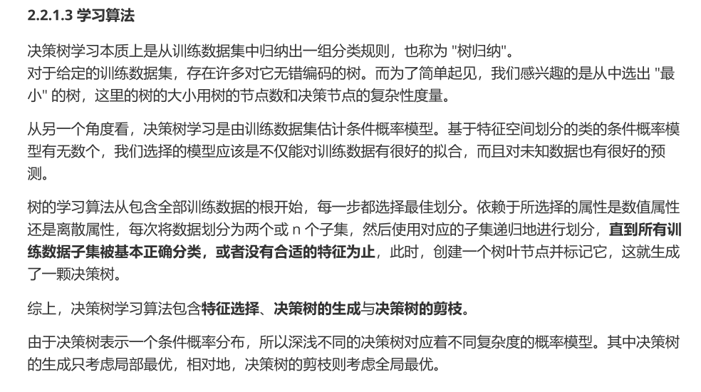
- 2.2.1.1 决策树基本流程
02–特征选择-信息熵
- 香农熵的计算